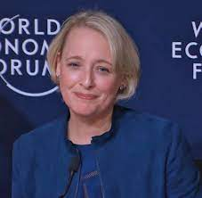

Vida Personal

Sweet está casada con Chad Creighton Sweet, quien fue presidente de campaña del republicano Ted Cruz para la campaña presidencial de 2016 de Cruz. Tiene dos hijas. Viven en Bethesda, Maryland.
Patrimonio público : 7 864 882 USD
País de residencia : Desconocido
Sweet está casada con Chad Creighton Sweet, quien fue presidente de campaña del republicano Ted Cruz para la campaña presidencial de 2016 de Cruz. Tiene dos hijas. Viven en Bethesda, Maryland.
Patrimonio público : 7 864 882 USD
País de residencia : Desconocido